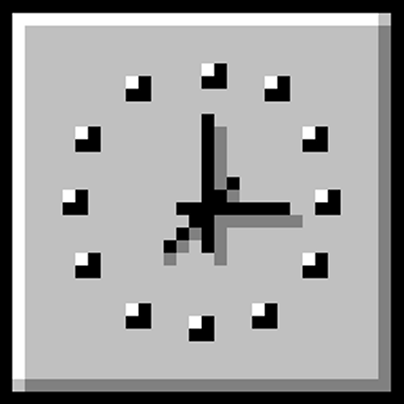

|

User: #310 CALLSAVER® Transcript
|

|
DATE: 16. October 1995
TIME: 20:56
USER: #310
CALL TAKER: GFLEISCHMAN
TRANSCRIPTION: JAMONS
###Dial Tone###
CALL TAKER: Willkommen an der Nightline Berlin, sprechen Sie Deutsch oder English?
USER: Hi, yes English.
CALL TAKER: Alright, and how are you doing this evening?
USER: I'm doing fine, you know, things are always pretty bad for me...
But I'm making the most of it! I have my little cup of tea
that I just made, it's this wonderful green tea and ginger blend that I buy at Aldi and oh my god, it is so perfect for this weather,
especially this time of night, I just count on it.
CALL TAKER: I'm sorry to hear that you're not feeling well.
USER: Yeah, so what I actually wanted to talk about was.. I was at work the other day, I work at this research lab near Spree Park, it's owned by Siemens,
but I work in the water health center down below. I work with phytoplankton which are tiny microorganisms that live in the
water column, in the water column just means in the water, let me know if you aren't familar with them...
###USER pauses for response from CALL TAKER who makes no response###
USER: Yeah, and I've worked here a while, like a few years or so, and I take my work very seriously. I'm one of the best
employees, I'm always helping out my coworkers. I
actually have pioneered kind of a special way of doing things. It's like... this different way of seeing what we're doing. My coworkers are such nice people but they
just work so, so passively, you know? Like this one, she's this really nice woman named Johanna and she's great, I mean
so nice, like the nicest person. But, she just works away by herself and finishes all of her samples and goes home at like 3, sorry 15,
and she just has everything in this nice, neat pile on her desk and it's so neat, as if she straightened it with a ruler, you know?
But I really take my time with the samples, I finish at like 7 pm you know, and it's because I know them and I'm really seeing them.
CALL TAKER: Hmm, you are employed at a research lab?
USER: It's actually really amazing. So in my job I'm supposed to be observing, categorizing, and reporting so what that means, I
know it's a bit of jargon, is I'm supposed to look at all of the different phytoplankton species in the water that we get, it's all stacked in these
giant containers in the lab, just thousands of little petri dishes of water that get sent to us by the city or whoever, and then I
put them under the scope and I have to identify all of the different plankton to species level, and I know you've probably
never worked in a lab but that's really hard. And I don't just categorize the species while all of those things are squirming around,
I can even identify the individuals. That's what I was saying about being a pioneer, nobody else can do that in my entire building and
probably at any water treatment plant I think..
CALL TAKER: Hmm, that sounds like very important work.
USER: Yeah like I know when they get picked up multiple times. We always just flush the samples when we're done and after I'd worked there
a few months I realized that I was starting to see the same plankton again and again. They must be getting back in the Spree from the
aquifer under the building, I'm not sure but I know for a fact that I recognize some of them. There was this one, the first one
that I recognized, and it had these little speckles on it that looked exactly like the birthmark on my back, it was the same pattern
exactly. And so I thought, wow it's so lucky that I found this one, but then a few months later the same plankton was back in my
petri dish, he even looked up at me like he recognized me.
CALL TAKER: Do you have friends outside of work that you see often?
USER: Um, yeah I have plenty of friends. I see them sometimes, when we have time. I mean it can be hard making
friends here, since I'm not from here you know. I talk to Johanna sometimes, quite a bit actually. She and I will
get coffee or lunch or whatever and it's always really nice. I just hate that she is always leaving so early to
go pick up her kid or whatever. I try and get her to look at my samples, like really look, because usually when I show
her she just says 'Oh neat you've got some diatoms' or whatever, but she doesn't understand what I'm saying, that the same
goddamn plankton that I just saw last week is in my petri dish again. Like, can you believe how insane that is? What are the
chances that the same plankton would get sucked up in a completely separate water sample, the pipettes they use for that are tiny!
CALL TAKER: Why do you think that it is the same plankton? That is plainly impossible don't you think?
USER: Um, I'm not sure you understand. I'm the head lab assistant and I have worked
at this plant for over ten years, I have looked at these plankton each and every day for ten years, yes, I know that
it seems impossible but I'm telling you that it is happening to me. It's so frustrating you know? I try and explain this to
men when I go out on dates, and I just went on one last week by the way, and they just don't understand what I'm saying. Like,
I know that phytoplankton and stuff like that are complex, and most people probably aren't familiar with them, so it's
probably just my fault for trying to explain that sort of thing to a lay-person. But I'm pretty good at making things easily
digestible for people, I was a TA in college, so I don't understand why people get so turned off when I start talking about this.
CALL TAKER: Do you have trouble making friends with others?
USER: I just feel like people don't understand me, like I'm always seeing things differently you know? Like I'm seeing things
that other people just can't see and it's frustrating because it makes it so I'm like living alone. So actually the problem that I
was going to tell you about is that I'm worried for Johanna. She just seems so stagnant in her work and in her life in general,
like she doesn't care. We got in this little argument about it at work the other day. I just pointed out to her that if she
started to categorize the plankton by individuals, like naming them, like I do, then she might get to start working on some new projects,
since she's just been working at the same desk for so long. She got so defensive and just told me that she actually had other jobs at
the lab that I didn't know about, which I think is a lie. And she threatened to tell our manager that I was wasting time at work
'getting to know the plankton' her words!. I just can't believe she would say that to me. Isn't that ridiculous?
CALL TAKER: We have many callers who struggle to make friends in the city for many reasons. The best course of action is usually
to focus on forming bonds with the people you are around every day, such as in work or school settings. You can also try going to scheduled
meet ups around Berlin, try checking boards and so on at your local coffee shops to see when such meet ups are happening.
USER: I actually have a lot of friends here, I have this one friend named
|
|
|